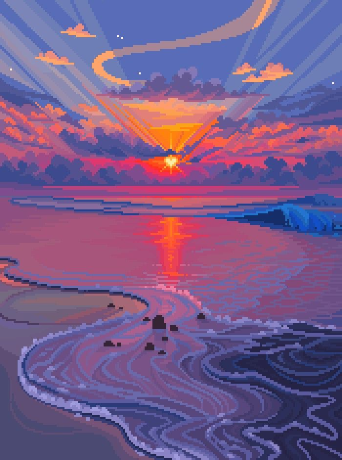

I am the author, I have created this website to show other people that they should give Soft core country music a try to and lison. The reson I wanted to do this is because I use to not like lisoning to music at all untill I found some music that I like the reson I picked this type and instead of the type of misic that got me into lisoning to misic in the first place is because I took a year long brake from lisoning untill my friend showed me soft core country music.

The reason I choose this image is because the
music is a lot of times about the sunset or the sun.
I picked the pixel art verson because I think that it looks cool and links to
programing because pixel is made on computers as well.
Why you should listen what I call soft core country music